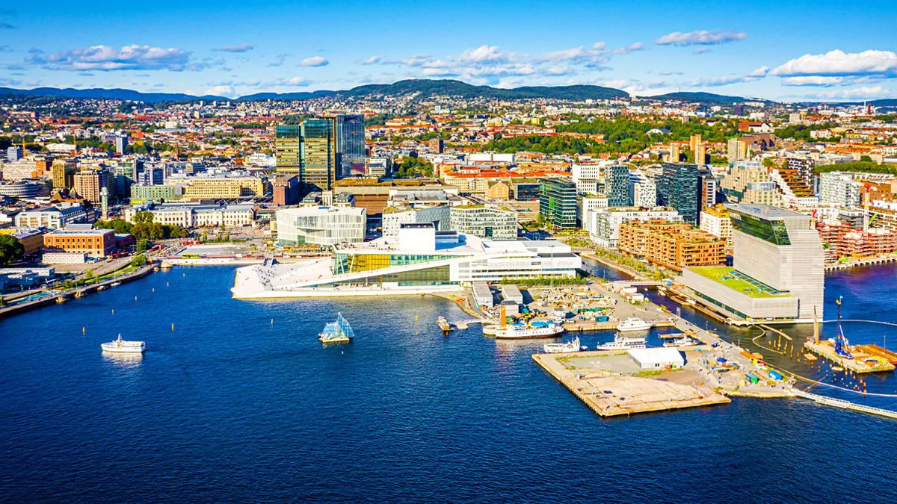
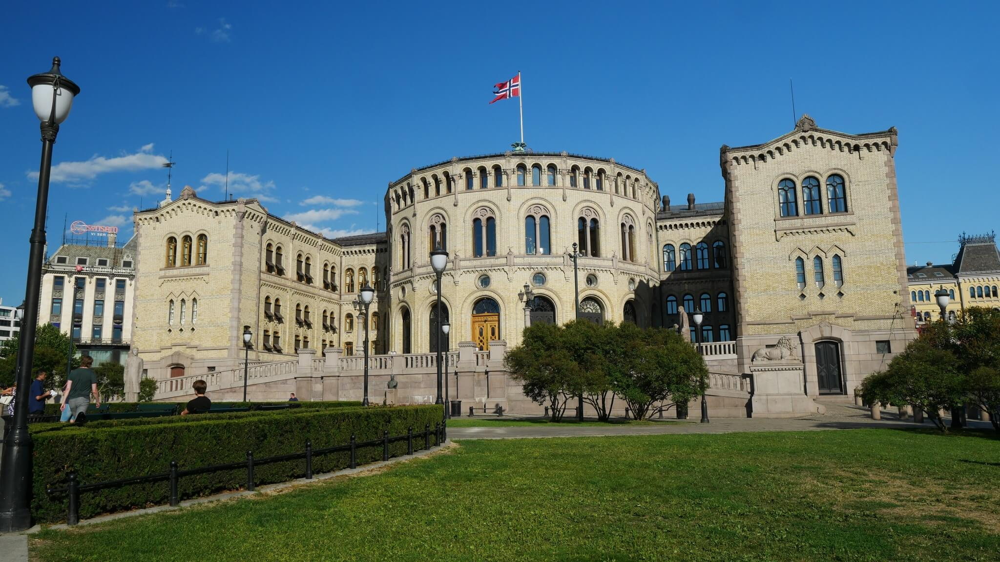
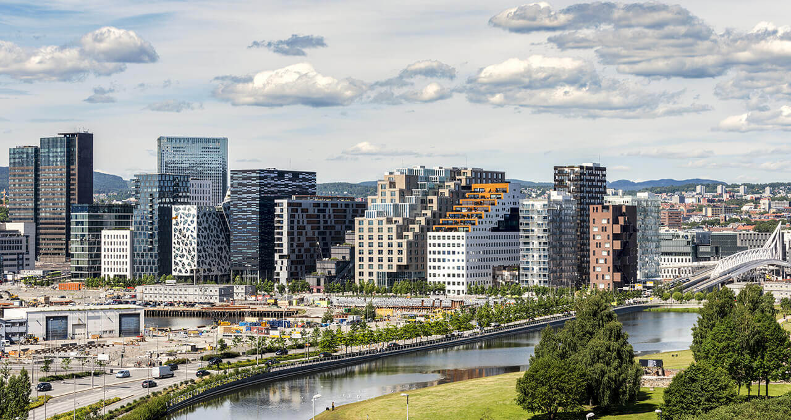
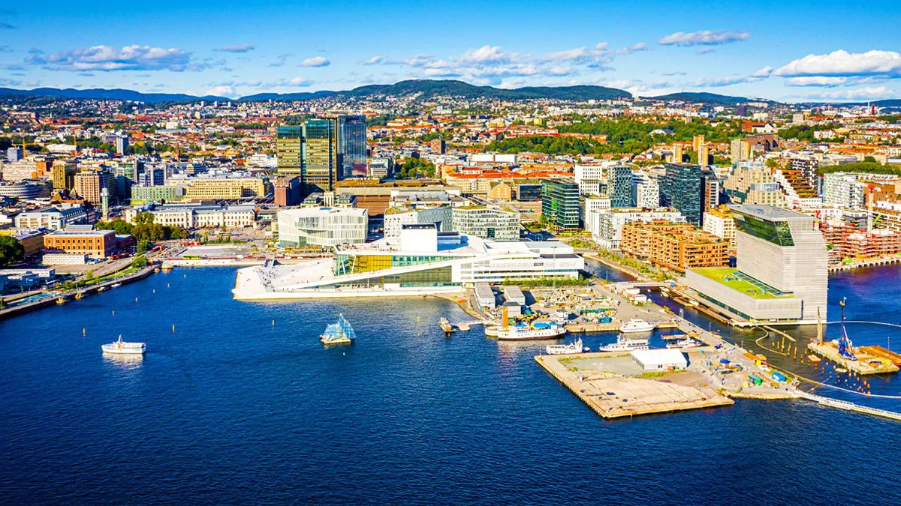
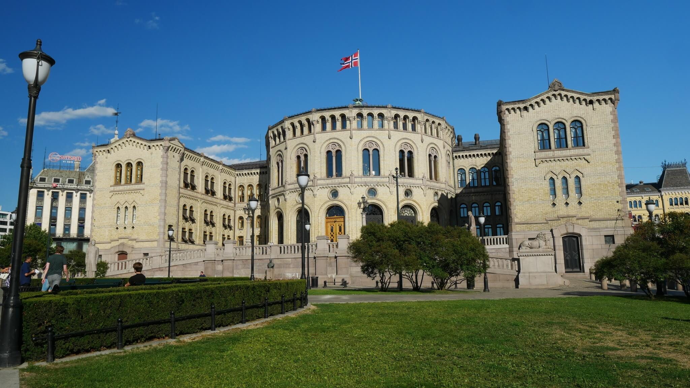
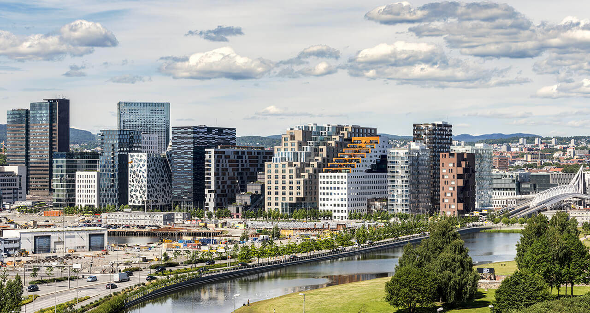

Oslo ist die Hauptstadt des Königreichs Norwegen. Sie trug in der Vergangenheit auch den Namen Christiania (1624 bis 1924) bzw. Kristiania (alternative Schreibweise von 1877/1897 bis 1924). Die Kommune Oslo hat 693.494 Einwohner (Stand: 27. Februar 2020). Sie bildet eine eigenständige Provinz (Fylke) und ist zudem Verwaltungssitz für die benachbarte Provinz Viken. Mit 1.019.513 Einwohnern ist Oslo der mit Abstand größte Ballungsraum des Landes.[2] In der Groß-Oslo-Region leben über 1,5 Millionen Menschen, also fast ein Drittel der gesamten Bevölkerung Norwegens von rund 5,3 Millionen.[3]
 




